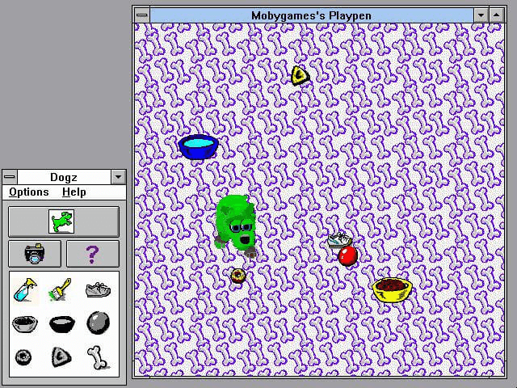

History
In 1991, a video game developer called PF.Magic was born from a hardware venture partnered with Sega and funded by AT&T to develop a Sega Genesis accessory called "The Edge 16". The device was a 4800-baud modem, intended to connect the console to landline telephones in order to facilitate online multiplayer. The company was co-founded by Rob Fulop, a game developer, and John Scull, a former marketing executive of Apple.
Rob Fulop had previously worked at Atari, developing a port of the arcade game Missile Command (1981) for the Atari 2600, which was a commercial success. He was 23 at the time. Feeling underappreciated and uncredited for his work for Atari, and encouraged by the success of other ex-Atari employees who left to form Activision, he departed the company along with his boss and other ex-employees from Atari's home console division to found Imagic. Here, he developed the company's debut title Demon Attack (1982), which would go on to become one of the best selling games for the Atari 2600. Shortly after this, the Video Game Crash of 1983 caused Fulop to leave the company.
Later on, Fulop formed Interactive Productions, and was hired Nolan Bushnell's company Axlon to help develop the Control-Vision (codenamed NEMO), a video game console that was meant to use VHS tapes for games rather than ROM cartridges. It was during this time that Fulop helped to design Night Trap, an "interactive movie" initially intended for the NEMO. However, the NEMO failed after investor Hasbro pulled their funding in 1989. Night Trap remained unreleased, the game rights having been purchased by head developer Tom Zito and all physical copies were stored in a Rhode Island warehouse.
In 1991, Interactive Productions would go on to become PF.Magic, with Fulop beginning development of the Edge. Not long after, Sega, looking for content to market for the release of the 1992 Sega CD accessory for the Genesis, contacted Zito. Without Fulop's involvement, he created a version of Night Trap for the Sega CD, which was released by his company Digital Pictures. Night Trap proved hugely controversial due to its violent and sexual content, sparking along with other games a discussion on the effects of violent video games on children. The controversy became so severe that the game was discussed in a 1993 United States Senate committee hearing, along with Mortal Kombat. Toys "R" Us and Kay-Bee Toys later pulled the game from shelves.
Fulop felt singled out by the negative attention on Night Trap, which carried his name. At the time, PF.Magic was working on "Ballz 3D: Fighting At Its Ballziest", a fighting game for SNES and Genesis intended to pair with the Edge. It had a unique psuedo-3D style, each character being made up of a skeleton of 2D spheres. Not long before its release, however, AT&T pulled funding for the Edge due to the cost of the device. While Ballz would go onto be published by Accolade in 1994 to moderate success, the loss of half their initial funding and no project to work on left PF.Magic in dire straits. The next release would make or break the company.
The controversy surrounding Night Trap frustrated Fulop so greatly that he decided the next game he made would be as inoffensive and cute as possible. It was December at the time, and Fulop spoke with a Mall Santa to try to get a read on what kids wanted - what would sell. The answer was the same as it always had been: a puppy.
The team at PF.Magic used the technology they previously used for Ballz to build a dog with the same visual style. About the technology, Fulop said:
"You know, the sphere is the only thing that wherever you put the camera, it's still a sphere. You don't need to store different images of the sphere. You just need to know the sphere has a radius of five and is blue and you can create it.
"So if you build the whole character out of spheres, all you have to do is keep track of is how the spheres connect. So we had a patent on that, we built the whole world using that. Then we made it into a pet. We built it into a dog. People loved it." (Game Developer, 2011)
Dogz released in 1995 and struck a chord. The Petz series was massively successful, owed in part to the marketing strategy PF.Magic employed - to give away free trials of the game, and have people become so attached to their virtual pets that they couldn't bear to leave them when their time was up. In addition, the company sold plush toys with the Petz trademark. Virtual pets were a new and exciting thing that had not yet come into the cultural zietgiest. According to Fulop:
"...there was no computer pets before that. But about the same time, though, Japan had come out with the Tamagotchi toy. The two were kind of built at the same time. I don't think we even knew about each other." (Game Developer, 2011)
With the release of Catz and Oddballz shortly after, the Petz series become PF.Magic's flagship title, spawning a series of games successful and (as Fulop had hoped) child-friendly enough to be advertised in Scholastic Book Fair magazines.
In 1998, PF.Magic was bought out by by Mindscape, Inc, which was itself bought by The Learning Company. The latter was then sold to Mattel, and Ubisoft acquired the Petz series in 2001. The last installment of the Petz series, Petz 5, was developed by the short-lived Studio Mythos, which was founded in 2000. Ubisoft still owns the copyright for the Petz title and continued to make additional games until 2014, however, these games had completely different gameplay and no relation to the original series outside of name.
PF.Magic's designer and programmer, Andrew Stern, went onto develop an experimental project with seperate team, which would become Façade.
If you're left wondering what PF.Magic stands for, Fulop had this to say:
“When I was at Atari and made many games, a lot of times we didn’t really comment our codes very well,” he says. “So if something would work and I wasn’t really sure how it worked, I would just write ‘PF Magic’ which meant ‘pure fucking magic’.
“We were only bothered that the code was delivering the goods and all that really matters is people have a great experience. The technology behind games is invisible to the customer and they really don’t care. It’s just fun. It just works.” (Retro Gamer, July 2019)
For more info about PF.Magic's history, and archives of interviews with Fulop, take a look at these sources:
Wayback Petz
The Replay Interviews: Rob Fulop
Playing Catch Up: Night Trap's Rob Fulop
Below is a list of virtual pet games developed by PF.Magic/Studio Mythos.
Visit MAZZ LABS for full game downloads, and Wayback Petz for compatibility fixes & serial numbers.
For more detailed information about the game's inner workings, refer to work done by members of the Petz community.
You may also be interested in a paper written by the developers about the game's design for the 1997 Socially Intelligent Agents AAAI Fall Symposium.
Dogz: Your Virtual Petz
Released: April 1995
Developer: PF.Magic
Publisher: PF.Magic
Distributor: Virgin Interactive Entertainment
Systems: Windows 3.1, Windows 95, Macintosh
Features 5 Dogz you can adopt: Bootz, ChiChi, Chip, Jowls, and Scrappy. Has no integration with Catz. Had a GBC port that was not well recieved.

Catz: Your Computer Petz
Released: April 1996
Developer: PF.Magic
Publisher: PF.Magic
Distributor: Mindscape
Systems: Windows 3.1, Windows 95, Macintosh
Features 5 Catz to adopt: Homebody, Jester, Pouncer, Scaredy, Sophisto. Has no integration with Dogz. Had a GBC port that was not well recieved.
Oddballz
Released: 1996
Developer: PF.Magic
Publisher: PF.Magic
Distributor: Mindscape
Systems: Windows 3.1, Windows 95, Macintosh
Oddballz features 13 breedz of strange creatures. Some were DLC. While it did not have any sequels, many animations and textures from oddballz went on to be used in later Petz games.
Dogz II / Catz II / Petz II
Released: November 1997
Developer: PF.Magic
Publisher: PF.Magic
Distributor: Mindscape
Systems: Windows 3.1, Windows 95
The first Petz game to integrate Catz and Dogz together, as well as allow you to adopt multiple Petz. It was also the first Petz game to feature online integration.
Dogz 3 / Catz 3 / Petz 3
Released: August 1998
Developer: PF.Magic
PublisherP: PF.Magic
Distributor: Mindscape
Systems: Windows 95, Windows 98
Petz 3 was the first in the series to feature Breeding, Clothing, and Playscenes. Like II, it had exclusive downloadable content.
Babyz
Released: 1999
Developer: PF.Magic
Publisher: The Learning Company
Distributor: Mindscape
Systems: Windows 98
Uses the Petz 3 engine. Personally, I think they're a little uncanny... but the list would be incomplete without them.
Dogz 4 / Catz 4 / Petz 4
Released: September 1999
Developer: PF.Magic
Publisher: Mindscape Entertainment
Distributor: Mindscape
Systems: Windows 98, Windows ME, Windows XP
Petz 4 is still widely used by the Petz community.
Dogz 5 / Catz 5 / Petz 5
Released: July 22, 2002
Developer: Studio Mythos
Publisher: Ubisoft
Distributor: Ubisoft
Systems: Windows 98, Windows ME, Windows XP, Windows 2000
The final installment of the Petz series. Introduced minigames and Litterz (the ability for Petz to have more than one Puppy or Kitten at a time). It also added day and night cycles, as well as weather effects, and changed how the Supply Case functioned.